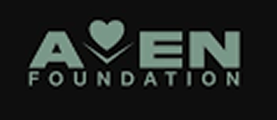

Cares of Washington is made possible by public funders, private foundations, corporate sponsors, and individual donors. Their generosity helps people with disabilities and low-income families achieve self-sufficiency. We want to thank the following donors:
$25,000+

- Aven Foundation
- BECU
- Liberty Mutual/Safeco Foundation
- M.J Murdock Charitable Trust
- Port of Seattle
- Washington State DSHS
- Snohomish, King, Pierce and Kitsap County Human Services departments
$10,000+
- United Way of Pierce County
- Bamford Foundation
- Milgard Foundation-Windows of Hope fund
- CLA Foundation
- Norcliffe Foundation
- Chatherine Holmes Wilkins Charitable Foundation
$1,000+
- First Federal Bank Foundation
- Washington Federal Foundation
- Tulalip Tribe Foundation
- Moccasin Lake Foundation
- Microsoft Corp
- Anonymous donors from public coordinated campaigns
- Ratna Chembrolu
- Nitant Singh
- Jess Watts
$500+
- Donavan Lam
- Francisco Barros
- Lars Nowack
- Julie Breeden
- Steve Norman